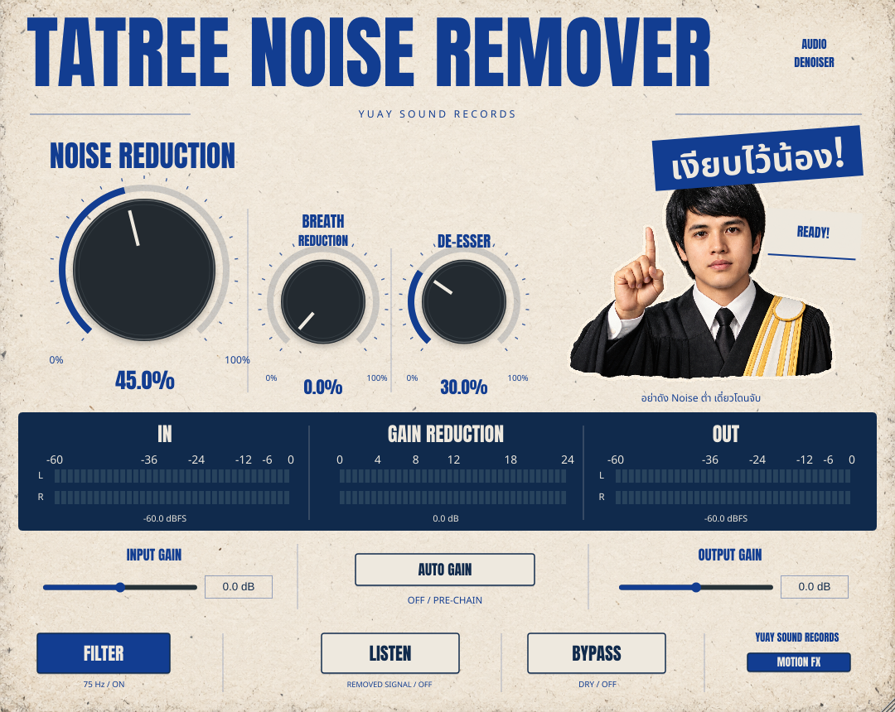

TATREE NOISE REMOVER 2
ครีม–น้ำเงิน • ทนายภาพสี • Motion FX ตอบสนองกับระบบเสียง
ตัวอย่าง Motion ก่อนเพิ่ม Gain (2.0.0)
Idle → Noise reduction → De-esser → Input Hot → Bypass → Motion OFF → Breath → Listen → Filter ON/OFF บันทึกนี้มาจาก native UI บน Linux; Windows ผ่าน automated validation แล้ว วิดีโอนี้ไม่มีเสียงและไม่ใช่ตัวปลั๊กอินที่รันในเว็บ
ตรวจภาพแต่ละสถานะ — รุ่น 2.0.3
ภาพชุดนี้จับจาก native UI บน Linux หลังเพิ่ม Input / Auto Gain / Output; ภาพ Windows อยู่ใน artifact ของ runner

ฟัง Vocal Auto Gain
เสียงพูดจริงที่เปลี่ยนระดับระหว่างวลี ปิด Noise/Ess/Breath/Filter: ก่อน → หลัง Auto Gain เท่านั้น
ผลตรวจเทียบ DSP กับงานอ้างอิงและข้อจำกัด
ฟังเสียงก่อน–หลัง
ไฟล์นี้เป็นเสียงสังเคราะห์สำหรับทดสอบ มีเสียง harmonic, hiss, hum และ noise ไม่ใช่ตัวอย่างเสียงพูดจริงหรือหลักฐานว่าเสียงทุกชนิดจะดีขึ้น
ก่อนประมวลผล
หลังประมวลผล — Noise 60%, De-esser 50%, Breath 20%
Windows เป็นเวอร์ชันหลักก่อน
ดู วิธีบิลด์และทดสอบ Windows รุ่น 2.0.3 ผ่าน MSVC, audio/motion tests, UI integration และ pluginval แล้ว ดาวน์โหลด Windows ZIP
Mac เป็นขั้นถัดไป
รุ่น native ต้องบิลด์บน Mac ก่อน ยังไม่มีไฟล์ติดตั้ง Mac ที่ทดสอบแล้วในชุดนี้ เตรียม Apple Command Line Tools และ CMake จากนั้นเปิด Terminal ในโฟลเดอร์นี้แล้วรัน:
bash scripts/build-macos.command
เมื่อผ่าน จะได้ Standalone app, VST3 และ AU ใน build-macos/Tatree_artefacts/Release/ ดูขั้นตอนละเอียดใน docs/TESTING.md
ตรวจแล้วบน Linux: 64 core audio/motion assertions พร้อม speech regression, CTest 2/2, pluginval strictness 5 และ native UI integration ดู ผลตรวจและข้อจำกัด กับ รายงาน UI